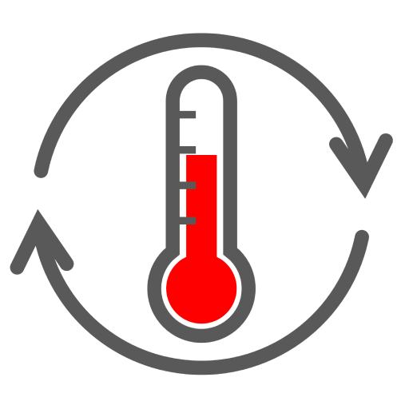

Temperature converter
0×0
●
◐
⇄
▣
⛶
📋
⋯
Cambiar tema
Intercambiar unidades
Acerca de
Acerca de
Temperature converter PWA
display_override: window-controls-overlay
Variables env(titlebar-area-*)
app-region: drag / no-drag
Evento geometrychange con debounce
navigator.windowControlsOverlay
Cerrar
En tiempo real
Termómetro
68 °F
Temperatura templada
Temperatura
De
Celsius
Fahrenheit
Kelvin
A
Celsius
Fahrenheit
Kelvin
68 °F
↗
Compartir resultado
↓
Instalar aplicación